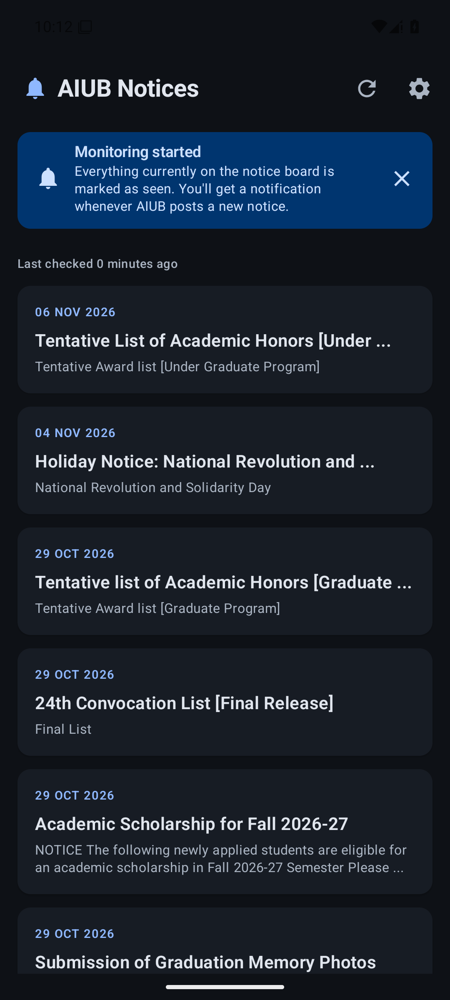
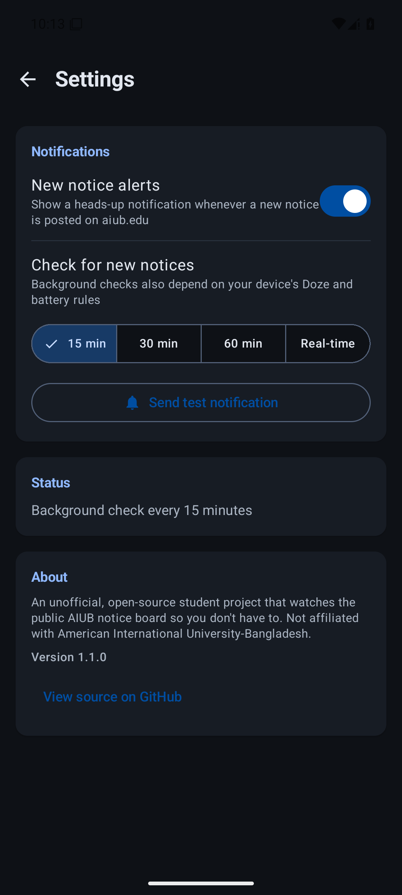
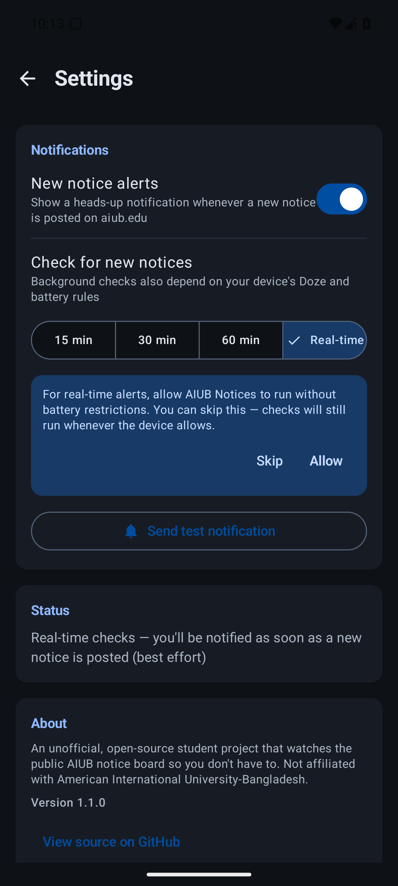
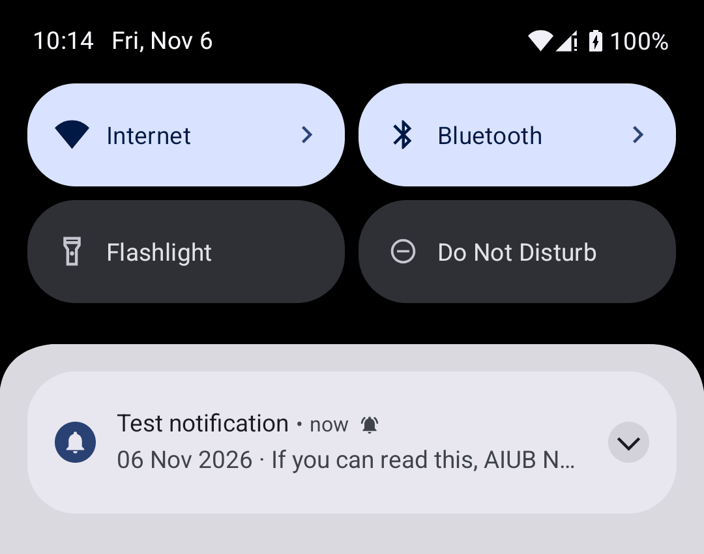

See the app




Why students use AIUB Notices App
Instant notifications
A heads-up alert the moment a new notice is posted — exam routines, fee deadlines, results, scholarships, convocation updates.
Real-time mode
Choose checks every 15/30/60 minutes — or real-time, roughly once a minute, for the fastest possible alert.
Works offline
The latest 30 notices are cached on your phone, so the list is there even in airplane mode.
One-tap open
Tap any notice or notification to open the official page on aiub.edu instantly.
Battery friendly
One polite request per check with WorkManager and Doze-respecting scheduling. No servers, no accounts, no tracking.
Open source
MIT-licensed on GitHub. Audit every line — the app talks to nothing but aiub.edu.
How it works
Download & install. Grab the APK from GitHub Releases and install it on any Android 8.0+ phone.
Baseline. On first launch the app silently marks everything currently on the AIUB notice board as seen — you only get notified about genuinely new notices.
Relax. The app checks the board in the background and buzzes you the moment something new appears. Pick your speed in Settings.
FAQ
What is AIUB Notices App?
A free, open-source Android app that watches the official AIUB notice board (aiub.edu) in the background and sends you a phone notification the moment a new notice is posted — exam schedules, fee deadlines, results, scholarships and convocation news.
Is AIUB Notices App an official AIUB app?
No. It is an unofficial, open-source student project and is not affiliated with or endorsed by American International University-Bangladesh. It only reads the public notice board, politely, with one request per check.
How do I download the AIUB notice app?
Download the signed APK from the GitHub releases page and install it on any Android 8.0+ phone.
Is the AIUB notice app free?
Yes — completely free, MIT-licensed open source, no ads, no accounts, no analytics.
Does AIUB Notices App drain battery or work offline?
It's battery-friendly by design: one lightweight request per poll using WorkManager (15/30/60-minute or real-time mode). The latest 30 notices are cached on-device, so the notice list works fully offline.